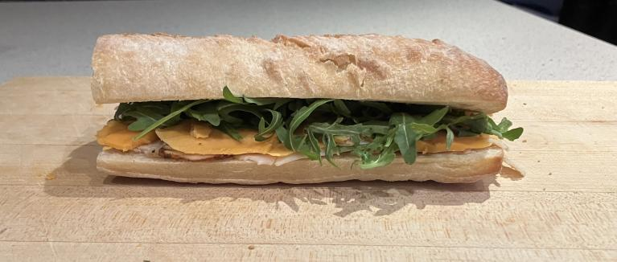

The Perfect Lunch Sandwich
Everyone loves a good sandwich for lunch. They're comfort food, part of your daily routine. Today, I will be making my favourite sandwich. I love this sandwich because it is incredibly simple and quick to make, so I have time to make it before I have to go to school. I also love it because it tastes amazing, and it helps prepare me for whatever challenges the rest of the day will throw at me.

The Perfect Sandwich Recipe
Ingredients
- 3 slices of cheddar cheese
- 3 slices of any kind of pre-sliced deli meat (i.e. turkey, salami, roast beef)
- 1 handful of arugula
- 1 loaf of Boulart ciabatta bread
- 1 tbsp of butter
Instructions
- Take your ciabatta and slice it along the side into two halves, then lay the halves with the crust down.
- Heat up the butter to room temperature (around 20-22°C).
- Lay slices of meat on ½ of the ciabatta, covering all of the available space.
- Place the cheese sLices on top of the meat, keeping the quantities relatively equal.
- Add a handful of arugula on top of the cheese and meat. Add or remove arugula based on your personal preference.
- Finally, put both halves together, and enjoy your delicious sandwich.